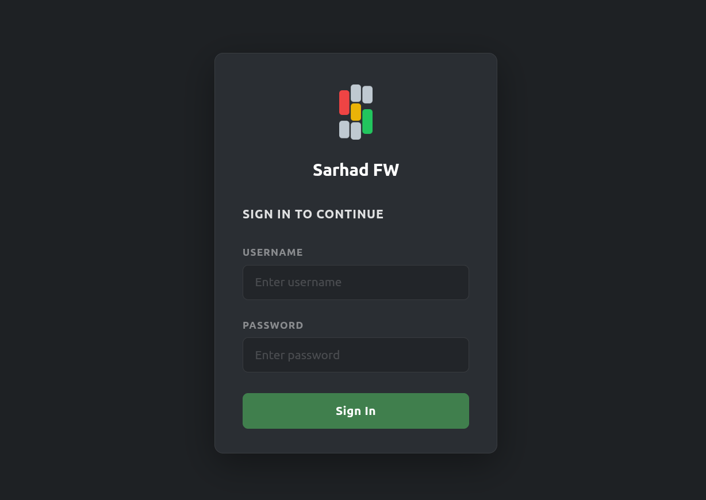

3. Tizimga kirish
Sarhad NGFW boshqaruvi veb-brauzer orqali amalga oshiriladi. Kirish sahifasi manzili:
https://<ip>:8443/login
Masalan: https://192.168.1.1:8443/login
{kind=link}

Tizimda standart (bootstrap) holatda ikkita hisob yaratiladi. Ikkalasining ham boshlang’ich paroli bir xil:
Foydalanuvchi nomi |
Parol |
Rol |
|---|---|---|
|
|
root (to’liq huquq) |
|
|
admin (boshqaruv) |
readonly rolidagi hisoblar standart holda yaratilmaydi — ularni root yoki
admin qo’lda qo’shadi (qarang: Foydalanuvchilarni boshqarish).
Warning
Birinchi kirishdan so’ng ikkala hisobning (root va admin)
standart parolini darhol o’zgartiring — aks holda tizim jiddiy xavf
ostida qoladi.
3.1. Foydalanuvchi rollari
Tizimda uchta rol mavjud:
- root
Barcha huquqlarga ega: tizimni to’liq boshqarish, konfiguratsiyani o’zgartirish, foydalanuvchilar va litsenziyani boshqarish.
- admin
Konfiguratsiyani ko’rish va o’zgartirish hamda foydalanuvchilarni boshqarish huquqiga ega. Ayrim tizim darajasidagi amallar faqat root uchun.
- readonly
Faqat ko’rish huquqi: tizim holati, statistika va hisobotlarni ko’radi, lekin sozlamalarni o’zgartira olmaydi.